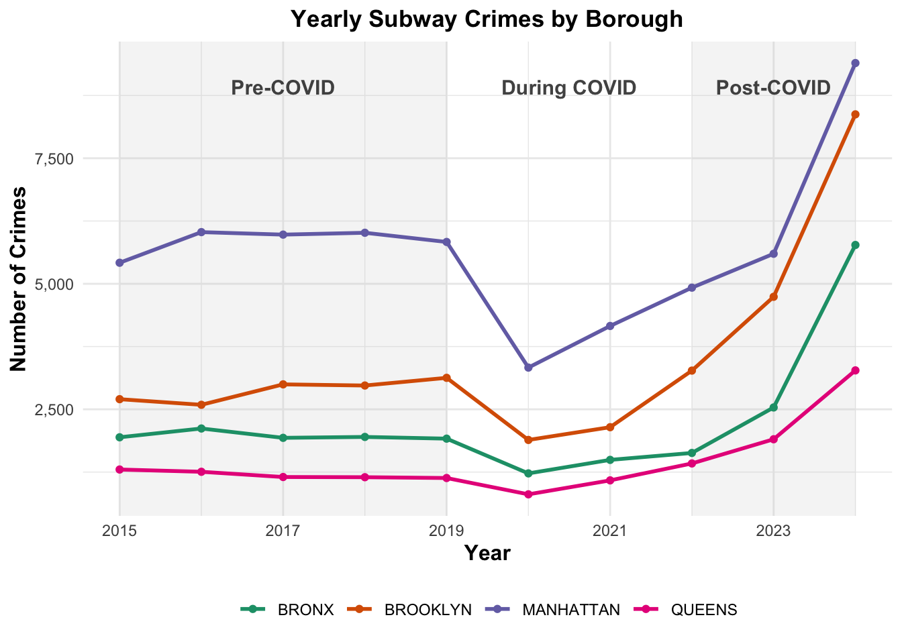
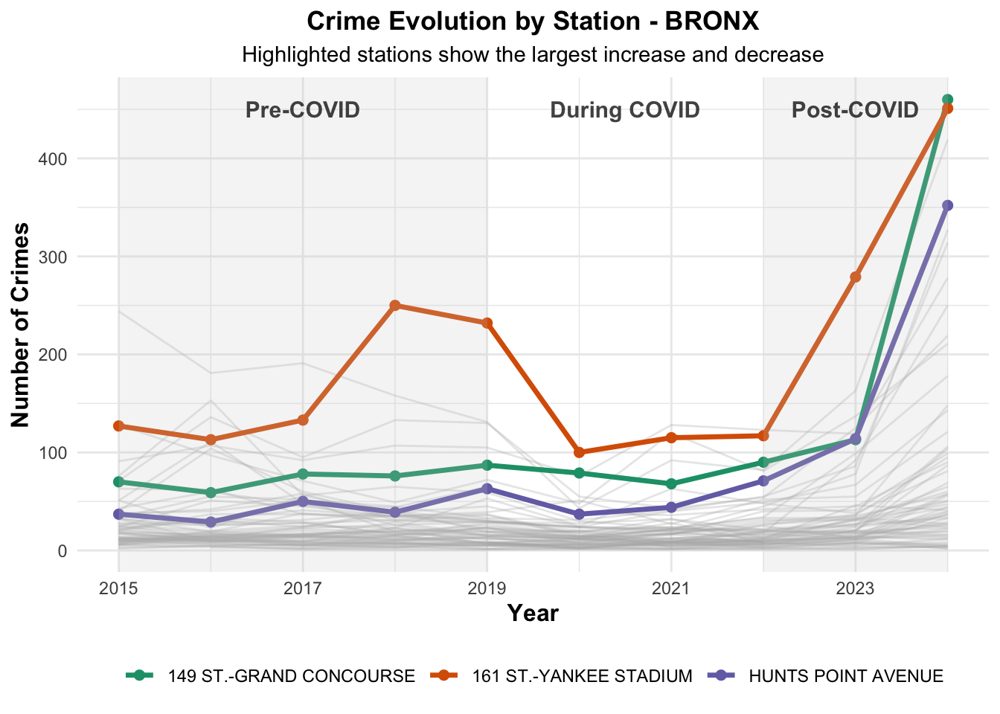
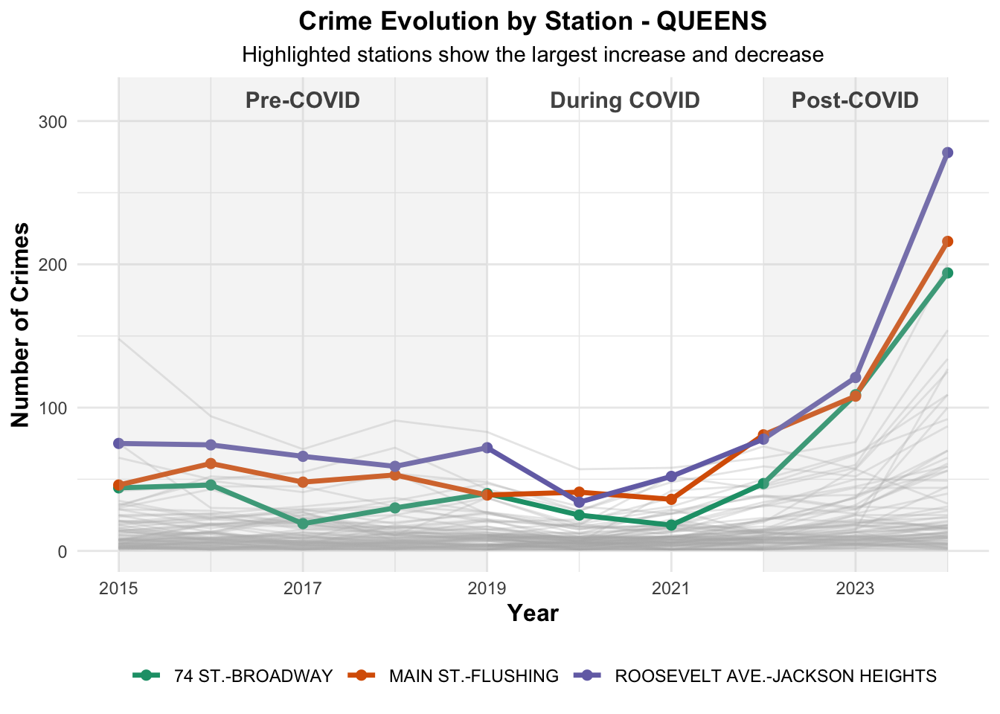

Final-Project SQ: How is crime distributed across the NYC subway system, and which stations report the highest number of crimes?
Author
Yago Parada
Introduction
This analysis is part of a broader project that examines crime in the New York City subway system and addresses the overarching question: Is there a correlation between crimes in the MTA and the stations where they occur? The project is divided into several sub-questions. In this section, we focus on identifying which subway stations report the highest number of crimes in each borough and on examining how crime is distributed across the NYC subway system from 2015 to 2025. By addressing this sub-question and linking it with the others, we aim to gain a better understanding of current crime patterns within the NYC subway network.
Data acquisition
For this analysis, we used the NYPD Complaint Data Historic dataset, which is publicly available on NYC Open Data. This dataset contains records of all valid felony, misdemeanor, and violation crimes reported to the NYPD, including details such as the date of the complaint, borough, location coordinates, and subway station when applicable. To acquire the data relevant for this sub-question, we filtered the dataset to include only crimes reported between 2015 and 2025 that occurred in the subway system or were handled by the NY Transit Police. The data was retrieved programmatically using the following R code.
Once the data was acquired, the next step was to inspect it for potential limitations and determine any necessary preparation or cleaning before starting the analysis. Upon initial examination, the first limitation identified was that there were no recorded subway crime cases for Staten Island. Investigating the full NYPD Complaint Data Historic dataset revealed that crimes in Staten Island may be recorded under Staten Island Rapid Transit rather than N.Y. Transit Police, as is the case for the other boroughs. To account for this, we retrieved the data for Staten Island by adjusting the filter to include Staten Island Rapid Transit and using records from the MTA Police Department:
Show the code
library(tidyverse)library(lubridate)## COMPLAINTS DATAfiltered_data <- complaint_df |>filter(juris_desc =="N.Y. TRANSIT POLICE"| prem_typ_desc =="TRANSIT - NYC SUBWAY") |>filter(between(cmplnt_fr_dt, as.Date("2015-01-01"), as.Date("2025-12-31"))) ### COMPLAINTS IN STATEN ISLANDresp_data_complaint_st <-request(url_data_complaint_api) |>req_url_query("$select"="cmplnt_num, cmplnt_fr_dt, juris_desc, prem_typ_desc, boro_nm, jurisdiction_code, x_coord_cd, y_coord_cd, transit_district, latitude, longitude, lat_lon, station_name, patrol_boro","$where"="cmplnt_fr_dt between '2015-01-01T00:00:00' and '2025-12-31T23:59:59' AND (juris_desc = 'STATN IS RAPID TRANS' OR juris_desc = 'MTA POLICE DEPT') AND boro_nm = 'STATEN ISLAND'","$limit"=500000) |>req_progress() |>req_perform(path =file.path("data", "courseproject", "nypd_complaint_historic_staten_island.csv"))complaint_statent_island_df <-read_csv(file.path("data", "courseproject", "nypd_complaint_historic_staten_island.csv"))
Examining the data from Staten Island, it was observed that most station names were missing, and there was no reliable way to ensure that the recorded crimes occurred in the subway system. Furthermore, the total number of crimes during the 10-year period was only 280, which is extremely low compared to the other boroughs As will be shown later, even the borough with the lowest number of crimes during this period, Queens, recorded 14,482 incidents. Therefore, given these limitations and the inability to guarantee that the data represents subway crimes, the team decided to omit Staten Island from the study.
Another issue identified in the dataset was that some crime records were missing the train station name. To address this, all null values in the station_name field were filled by matching the longitude, latitude, and borough with other records that had the same coordinates and a valid station name. This approach allowed us to complete the station information for all relevant records, ensuring that the subsequent analysis could correctly associate crimes with the corresponding subway stations.
During the process of replacing null values in the station name column, five observations were identified with missing borough values. Given the small number of affected records, a rule-based approach was applied to assign boroughs using station names, as shown in the code below.
With all the data prepared, we can now proceed with the analysis. The approach used to analyze this sub-question is hierarchical, starting at the borough level and then drilling down to the station level.
Borough Level
First, we aggregated the total number of reported crimes for each borough and calculated the percentage of total crimes that each borough represents. This allows us to identify which boroughs have the highest crime levels in the NYC subway system from 2015 to 2025.
As shown in the analysis, Manhattan has the highest number of reported crimes, with 56,684, representing 44.1% of the total crimes. In contrast, Queens reports 14,482 crimes, which accounts for 11.3% of the total. These results highlight the concentration of subway crime in Manhattan relative to the other boroughs
It is also important to examine the evolution of subway crime over time, particularly across the pre-COVID, during-COVID, and post-COVID periods. Analyzing trends in these periods allows us to observe how crime levels changed in response to major events, such as the COVID-19 pandemic, and to identify whether certain boroughs experienced sharper increases or decreases compared with others.
Show the code
borough_lvl_visualization_data <- df_borough_complete |>mutate(year =year(cmplnt_fr_dt)) |>group_by(boro_nm, year) |>summarise(n_crimes =n(),.groups ="drop") |>mutate(covid_period =case_when( year <2020~"Pre-COVID", year %in%2020:2021~"During COVID", year >2021~"Post-COVID" ) )covid_labels <-data.frame(xmin =c(min(borough_lvl_visualization_data$year), 2020, 2022),xmax =c(2019, 2021, max(borough_lvl_visualization_data$year)),period =c("Pre-COVID", "During COVID", "Post-COVID")) |>mutate(x_text = (xmin + xmax) /2# midpoint for centered label )covid_shades <- covid_labels |>filter(period !="During COVID")borough_lvl_visualization <-ggplot() +geom_rect( # Shaded rectangles for periodsdata = covid_shades,aes(xmin = xmin, xmax = xmax, ymin =-Inf, ymax =Inf),fill ="gray80", alpha =0.2,inherit.aes =FALSE ) +geom_text( # Text labels in background for each perioddata = covid_labels,aes(x = x_text, y =max(borough_lvl_visualization_data$n_crimes) *0.95, label = period),color ="gray9",size =4,alpha =0.8,fontface ="bold" ) +geom_line( #Lines and points per boroughdata = borough_lvl_visualization_data,aes(x = year, y = n_crimes, color = boro_nm),size =1 ) +geom_point(data = borough_lvl_visualization_data,aes(x = year, y = n_crimes, color = boro_nm) ) +scale_x_continuous(breaks =seq(min(borough_lvl_visualization_data$year),max(borough_lvl_visualization_data$year), by =2) ) +scale_y_continuous(labels = scales::comma) +scale_color_brewer(palette ="Dark2") +labs(title ="Yearly Subway Crimes by Borough",x ="Year",y ="Number of Crimes",color =NULL ) +theme_minimal() +theme(plot.title =element_text(face ="bold", hjust =0.5),axis.title =element_text(face ="bold", size =12),legend.position ="bottom") +guides(color =guide_legend(nrow =1, byrow =TRUE) )borough_lvl_visualization
From the borough-level line chart, crime levels appear relatively stable during the pre-COVID period. As expected, a clear decrease is observed during the COVID years, coinciding with reduced subway usage and mobility restrictions. However, in the post-COVID period, crime levels rebound sharply, reaching new historical highs in several boroughs. In particular, Brooklyn shows a notable change in its trend. Before COVID-19, the number of reported crimes in Brooklyn was approximately half of those recorded in Manhattan. In the post-COVID period, however, crime levels in Brooklyn increased substantially, resulting in figures that are now almost comparable to those of Manhattan
Station Level
The next step in the analysis focuses on the station level. First, we identify the subway stations with the highest total number of reported crimes across the entire system. Then, the analysis is conducted separately by borough, examining which stations record the highest crime levels within each borough. Finally, we analyze temporal changes at the station level to identify which stations have experienced the largest increases in reported crime since 2015. Because there were no significant decreases, the analysis focuses only on stations that show large increases within each borough.
Show the code
# Station levelstation_lvl_table <- df_borough_complete |>group_by(station_name, boro_nm) |>summarise(n_crimes =n(),.groups ="drop") |>mutate(percentage_total =percent(n_crimes /sum(n_crimes), accuracy =0.01)) |>arrange(desc(n_crimes)) |>slice_head(n =10)## Data analyse highest increase/decrease station_yearly <- df_borough_complete |>mutate(year =year(cmplnt_fr_dt)) |>group_by(boro_nm, station_name, year) |>summarise(n_crimes =n(), .groups ="drop") |>mutate(covid_period =case_when( year <2020~"Pre-COVID", year %in%2020:2021~"During COVID", year >2021~"Post-COVID" ))station_trend <- station_yearly |>group_by(boro_nm, station_name) |>arrange(year) |>summarise(start_year =first(year),end_year =last(year),start_crimes =first(n_crimes),end_crimes =last(n_crimes),net_change = end_crimes - start_crimes,.groups ="drop" )station_trend <- station_trend |># avoid unstable datafilter(start_crimes >=5| end_crimes >=5)top_increase <- station_trend |>group_by(boro_nm) |>slice_max(net_change, n =3)top_decrease <- station_trend |>group_by(boro_nm) |>slice_min(net_change, n =1)highlight_stations <-bind_rows(top_increase, top_decrease)### horizontal bar chart station lvl tableborough_colors <-c("BRONX"="#D95F02","MANHATTAN"="#7570B3")ggplot(station_lvl_table,aes(x =reorder(station_name, n_crimes),y = n_crimes,fill = boro_nm)) +geom_col() +geom_text(aes(label = scales::comma(n_crimes)),hjust =1.10, color ="white",size =3.5) +coord_flip() +scale_fill_manual(values = borough_colors) +scale_y_continuous(labels =NULL) +labs(title ="Top 10 Stations by Number of Crimes",x ="Station",y ="Number of Crimes",fill =NULL ) +theme_minimal() +theme(plot.title =element_text(face ="bold", hjust =0),axis.title =element_text(face ="bold", size =12),legend.position ="bottom" )

Among the top 10 subway stations with the highest number of reported crimes, eight are located in Manhattan and the remaining two are in the Bronx. The station with the highest number of reported crimes is 125 Street, with 4,629 incidents, which represents 3.60% of the total number of crimes recorded during the study period.
This table closely mirrors the results observed in the top 10 stations analysis. It shows that a large share of reported subway crime is concentrated in Midtown Manhattan, with four out of the five stations located in this area. This concentration highlights Midtown’s role as a major transportation hub with high passenger volumes, which may contribute to higher reported crime levels compared with other parts of the city.
From the chart, we can observe the three stations that experienced the largest increases in reported crime over the study period, indicating locations where subway crime has intensified the most since the beginning of the analysis period.
In the case of Brooklyn, the highest concentration of reported crimes is observed at Broadway Junction. In the dataset, this station is recorded under different names, Broadway–East New York and Broadway–Eastern Parkway, which together account for 2,494 reported incidents.
The station 161 St–Yankee Stadium records the highest number of reported crimes in the Bronx, with 1,917 incidents, representing 8.51% of the total number of crimes in the borough.
Show the code
stations_highest_increase_bronx <- station_yearly |>filter(boro_nm =="BRONX") |>ggplot(aes(x = year, y = n_crimes, group = station_name)) +geom_line(color ="grey70", alpha =0.3) +geom_line(data = station_yearly |>semi_join(top_increase, by ="station_name") |>filter(boro_nm =="BRONX"),aes(color = station_name),size =1.2 ) +geom_point(data = station_yearly |>semi_join(top_increase, by ="station_name") |>filter(boro_nm =="BRONX"),aes(color = station_name),size =2 ) +geom_rect(data = covid_shades,aes(xmin = xmin, xmax = xmax, ymin =-Inf, ymax =Inf),fill ="gray80", alpha =0.2,inherit.aes =FALSE ) +geom_text(data = covid_labels,aes(x = x_text, y =max(500) *0.90, label = period),inherit.aes =FALSE,color ="gray9",size =4,alpha =0.8,fontface ="bold" ) +scale_x_continuous(breaks =seq(min(station_yearly$year), max(station_yearly$year), by =2) ) +scale_color_brewer(palette ="Dark2") +labs(title ="Crime Evolution by Station - BRONX",subtitle ="Highlighted stations show the largest increase and decrease",x ="Year",y ="Number of Crimes",color =NULL ) +theme_minimal() +theme(plot.title =element_text(face ="bold", hjust =0.5),axis.title =element_text(face ="bold", size =12),plot.subtitle =element_text(hjust =0.5),legend.position ="bottom") +guides(color =guide_legend(nrow =1, byrow =TRUE) )stations_highest_increase_bronx

As observed in the previous crime evolution chart, reported subway crime increases sharply in the post-COVID period. Notably, one of the stations with the largest increase in crimes between 2015 and 2025 is 161 St–Yankee Stadium, which is also the station with the highest total number of reported crimes in the Bronx.
In Queens, the Parsons/Archer–Jamaica Center station has the highest number of reported crimes, with 943 incidents, followed closely by the Roosevelt Ave.–Jackson Heights station, which recorded 909 incidents.
Show the code
stations_highest_increase_queens <- station_yearly |>filter(boro_nm =="QUEENS") |>ggplot(aes(x = year, y = n_crimes, group = station_name)) +geom_line(color ="grey70", alpha =0.3) +geom_line(data = station_yearly |>semi_join(top_increase, by ="station_name") |>filter(boro_nm =="QUEENS"),aes(color = station_name),size =1.2 ) +geom_point(data = station_yearly |>semi_join(top_increase, by ="station_name") |>filter(boro_nm =="QUEENS"),aes(color = station_name),size =2 ) +geom_rect(data = covid_shades,aes(xmin = xmin, xmax = xmax, ymin =-Inf, ymax =Inf),fill ="gray80", alpha =0.2,inherit.aes =FALSE ) +geom_text(data = covid_labels,aes(x = x_text, y =max(350) *0.90, label = period),inherit.aes =FALSE,color ="gray9",size =4,alpha =0.8,fontface ="bold" ) +scale_x_continuous(breaks =seq(min(station_yearly$year), max(station_yearly$year), by =2) ) +scale_color_brewer(palette ="Dark2") +labs(title ="Crime Evolution by Station - QUEENS",subtitle ="Highlighted stations show the largest increase and decrease",x ="Year",y ="Number of Crimes",color =NULL ) +theme_minimal() +theme(plot.title =element_text(face ="bold", hjust =0.5),axis.title =element_text(face ="bold", size =12),plot.subtitle =element_text(hjust =0.5),legend.position ="bottom") +guides(color =guide_legend(nrow =1, byrow =TRUE) )stations_highest_increase_queens

To conclude the station-level analysis, we can identify the station with the highest increase in crime in Queens.
In the following SQs, the rest of the team will attempt to explain these increases, for example by analyzing the relationship between crime and ridership numbers.
Spatial Distribution of Crime
After examining crime trends by borough, identifying high-crime stations, and exploring changes over time, the following map shows how subway crime is distributed across New York City in space. Instead of drawing a dot for every incident, it summarizes where incidents tend to pile up and where they are more spread out.
The colors on the map come from a statistical technique called kernel density estimation. Imagine placing a smooth “box” of height 1 over each crime location, then adding all those boxes together across the map. Where many crimes happen close to each other, the boxes overlap and create a tall “hill”; where crimes are rare, the surface stays low. The result is a continuous surface of crime density: high values where incidents are tightly clustered, lower values where they are more diffuse.
The legend numbers (for example, 100, 200, or 300) represent the height of that smoothed density surface. A value of 300 does not literally mean “300 crimes at this exact point”; instead, it means that, after smoothing with the boxes, the local concentration of crimes is about three times higher than an area with a value of 100. Moving from blue to green to yellow to red corresponds to increasing local concentration of incidents, even though each color patch covers a geographic area rather than a single station.
Darker or warmer colors (yellow, orange, red) highlight “hotspots” where the kernel combines many nearby incidents into high density. Cooler colors (blue, green) mark areas where crimes are present but less tightly clustered. It is important to note that areas without color do not mean there is no crime; rather, these areas have relatively fewer reported incidents compared to the hotspots, so they appear blank on the map.
The map allows us to see at a glance the areas with the highest crime density. As observed in the previous analysis, the highest concentration is in Midtown Manhattan. Other areas with relatively high crime density include the southern part of Manhattan, Harlem, the southern Bronx, and midtown Brooklyn, among others.
Conclusion
Throughout this study, we analyzed the distribution of subway crime across New York City, focusing on both borough-level and station-level patterns. At the borough level, we observed that Manhattan consistently reports the highest number of crimes, with hotspots in Midtown, southern Manhattan, and Harlem. Other areas with elevated crime include southern Bronx and midtown Brooklyn, though at lower levels.
We also examined crime trends over time at both the borough and station level. Crime levels were relatively stable before COVID, and after the pandemic, they have been increasing, reaching near all-time highs. This analysis also highlights the stations with the highest concentration of incidents.
Finally, the heatmap synthesizes these findings, showing areas where crimes are tightly clustered while reminding us that lighter or blank areas are not crime-free, just less dense. Overall, the analysis demonstrates that subway crime is spatially concentrated, providing insight into which boroughs and stations are most affected.